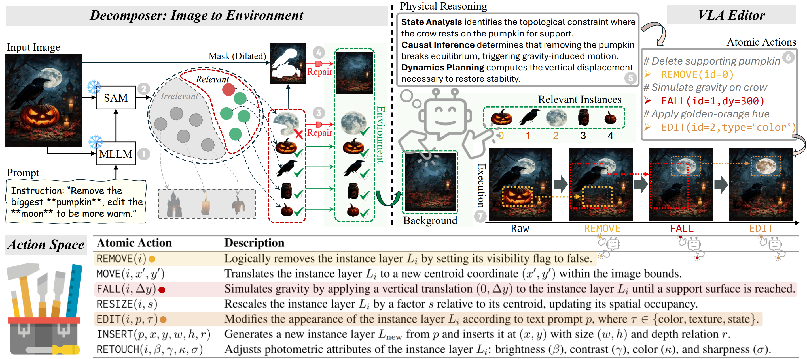

ACL 2026 · MainAccepted · CCF-A
I2E: From Image Pixels to Actionable Interactive Environments for Text-Guided Image Editing
Turning images into interactive object layers for precise, action-based editing with a vision-language-action agent.